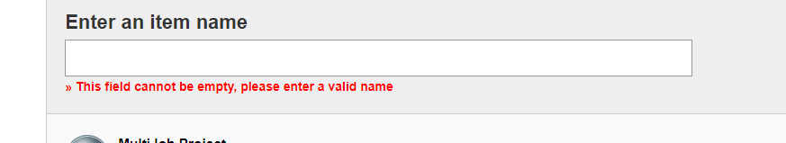
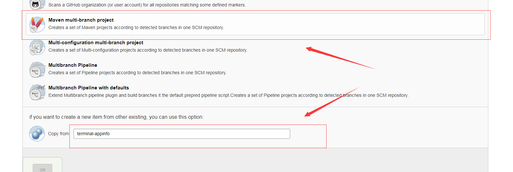
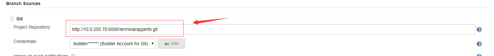

PS:待开发中。。。。
作者网页：www.jcohy.com
我的学习笔记，记录学习过程中的笔记以及遇到的问题,以及我的一些经验总结。如果出现链接失效,或者想知道更多的内容等情况可以提交 Issues 提醒我修改相关内容。
登录Jenlis
输入项目名
选择项目类型
点击ok，进入到下一步。修改项目地址

进入到项目里面的master分支，点击左上角的 立即构建
点击last build -> console output可以查看详细日志
关于构建失败时常遇到的错误请参考 jenkins常见错误。